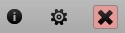

Interfaccia WebClient Tablet
L'interfaccia WebClient Tablet è ottimizzata per i touch screen ed è la scelta predefinita per i browser dei tablet, come Safari su iPad, Chrome su Android o Silk su Kindle Fire. Collegandoti tramite uno di questi dispositivi, verrai automaticamente indirizzato all'interfaccia Tablet.L'interfaccia Tablet non utilizza JavaScript ed è pertanto compatibile con i browser di vecchia generazione e con quelli dei dispositivi mobili che non supportano l'interfaccia Avanzata. Tutte le operazioni richiedono esclusivamente l'uso del tasto destro del mouse, per cliccare su elementi web standard come checkbox, bottoni e menù a tendina. Non ci sono menù contestuali o finestre pop-up.
Selezionare

La barra delle icone consente un accesso pratico tramite le dita a tutte le funzionalità essenziali di posta e groupware, suddivise in sezioni che corrispondono alle icone colorate nel menù in alto.
- Posta elettronica
- Rubrica indirizzi
- Calendario
- Attività
- Note
- File
Per scaricare i nuovi messaggi, clicca sull'icona della busta nella parte alta dello schermo.

Per iniziare a comporre un nuovo messaggio, creare un nuovo contatto o una lista di distribuzione, un nuovo appuntamento o un invito a una riunione, una nuova attività, una nuova nota o caricare un nuovo file, clicca sulla corrispondente icona nella barra degli strumenti e poi sul bottone Nuovo.
Per i messaggi odierni viene mostrato solo l'orario. Per le mail più vecchie viene invece mostrata soltanto la data. Se desideri visualizzare entrambe le informazioni, posiziona il puntatore del mouse sul messaggio e verranno mostrate data e ora. Per visualizzare le intestazioni complete del messaggio, clicca sul bottone Dettagli.
Ruotare

La visualizzazione orizzontale mostra tutte le cartelle principali in un elenco nella parte sinistra. La cartella corrente è evidenziata in grassetto e da un pallino. Per aggiungere altre cartelle all'elenco, utilizza l'opzione "Gestione cartelle". La visualizzazione verticale riduce l'elenco delle cartelle in un menù a tendina nella parte destra. Premi il bottone con il nome della cartella corrente per accedere alle opzioni delle altre cartelle.

L'opzione "Gestione cartelle" consente di accedere o creare un collegamento a cartelle attualmente non mostrate nell'elenco. Permette inoltre di aggiungere, rinominare, eliminare o rendere predefinite le cartelle.
Strisciare

Strisciando il dito in modo naturale in tutte le visualizzazioni a pagine (elenco di messaggi, contatti, pagine del calendario, ecc. ) è possibile avanzare o tornare indietro, esattamente come si sfogliano le pagine di un libro:
Pagina successiva: da destra a sinistra
Pagina precedente: da sinistra a destra (come nella figura qui sopra)

In alternativa a strisciare il dito, è possibile utilizzare i controlli delle pagine a destra (riportati sia in alto che in basso, per maggiore comodità), che mostrano anche la posizione corrente e il numero totale di pagine.

Puoi scorrere i messaggi, i contatti, le note, ecc. In alternativa ci sono delle frecce per passare al messaggio precedente o a quello successivo dopo averne aperto uno.
Risposta rapida

Se non hai bisogno di una formattazione speciale o di impostare particolari opzioni di invio, la Risposta rapida è l'ideale per rispondere al mittente originale del messaggio che stai leggendo.
Selezione

Si applica esclusivamente agli elementi nella pagina corrente:
- Per selezionare tutti gli elementi nella pagina, utilizza l'opzione "Tutti", oppure limita la selezione ai "Letti" o "Da leggere"
- Per deselezionare tutto, utilizza l'opzione "Nessuno"
- Utilizza l'opzione Inverti la selezione per selezionare tutti gli elementi tranne quelli che sono attualmente spuntati
Oppure utilizza le singole spunte vicino a ciascun elemento in elenco per effettuare la selezione ed eseguire determinare azioni su di essi.
Per poter selezionare tutti i messaggi in una cartella, potrebbe essere necessario aumentare il numero di elementi visualizzati in "Impostazioni - Generale".
Gestione

Dopo aver selezionato uno o più elementi (è presente la spunta), puoi compiere un'azione su di essi, utilizzando i bottoni (es. "Elimina", quindi ti verrà chiesta la conferma).

Puoi selezionare altre azioni meno consuete dal menù a tendina "Azione:" (es. "Segna come da leggere", "Lista nera", ecc.).
Cerca

Digita una frase per cercarla in tutte le sezioni dei dati attualmente visualizzati (nell'oggetto/mittente/destinatari delle e-mail, nel nome/indirizzo dei contatti, ecc.) oppure utilizza le parole chiave per limitare la ricerca a un elemento specifico (ad es. subject:ufficio per cercare solo nell'oggetto dei messaggi). L'elenco delle parole chiave disponibili è riportato in fondo a questa guida.
Per annullare la ricerca, premi il dito su una qualsiasi icona o cartella, oppure cancella tutto nella barra di ricerca e clicca nuovamente "Cerca".
Posta indesiderata

Utilizza l'opzione "Quarantena" nell'elenco delle cartelle per accedere alla tua lista bianca e nera. Qui potrai visualizzare gli indirizzi e-mail che sono permanentemente accettati oppure respinti. Puoi eliminare gli indirizzi oppure spostarli dalla lista nera a quella bianca o viceversa.
Per aggiungere alla lista nera il mittente di un messaggio spam o indesiderato:
- nell'elenco Quarantena, seleziona la cartella "Lista nera" e premi il bottone "Nuovo elemento"
- nell'elenco dei messaggi, spunta quello indesiderato e seleziona "Lista nera" dal menù "Azione:"
- nell'elenco dei messaggi, spunta quello indesiderato, premi "Sposta" e seleziona "Posta indesiderata"
Per poter accedere alla cartella "Posta indesiderata" dal menù "Copia/Sposta", utilizza la "Gestione cartelle" per creare un collegamento e includere la cartella "Posta indesiderata" nell'elenco delle cartelle preferite.
Gestione cartelle

Collega la cartella significa inserire la cartella nell'elenco delle cartelle preferite. Il collegamento consente di avere la cartella facilmente accessibile nell'elenco e durante le operazioni "Copia/Sposta". Puoi anche assegnare al collegamento un nome descrittivo, non necessariamente corrispondente al nome reale della cartella. Il nome personalizzato apparirà tra parentesi nell'albero di "Gestione cartelle".

Aprire una cartella cliccando sul nome, consente di accedere a una cartella utilizzata meno frequentemente e non visualizzata nell'elenco a sinistra. La cartella si aprirà esattamente come quelle collegate.

Aggiungi una cartella crea, appunto, una nuova cartella. Dovrai specificarne il tipo, a seconda che la nuova cartella debba accogliere messaggi di posta, contatti o altri tipi di elementi.

Rinomina la cartella per cambiare nome. Se è presente un collegamento a questa cartella nel menù a sinistra, non verrà modificato.

Imposta come cartella predefinita stabilisce dove i messaggi vengono ricevuti, inviati o salvati. Le cartelle predefinite sono sempre accessibili dall'elenco delle cartelle preferite e non possono essere rinominate o eliminate.

Elimina la cartella cancellerà permanentemente il contenuto della cartella (se clicchi su "Svuota") oppure tutto il contenuto e la cartella stessa (se clicchi su "Elimina").
Personalizzazione

Il bottone "Impostazioni" (tra le icone "Aiuto" e "Disconnessione" nell'angolo superiore destro) consente la personalizzazione dell'interfaccia Tablet. Le varie impostazioni sono organizzate in categorie che appaiono come cartelle (sul lato sinistro nella visualizzazione orizzontale oppure nel menù a tendina a destra nella visualizzazione verticale).

- Generale: cambia il formato di data e ora, imposta il numero di elementi per ogni pagina, abilita la Posta eliminata, aggiungi automaticamente i destinatari ai contatti, cambia la password e altro.
- Composizione: attiva la richiesta di conferma di lettura, inserisci i messaggi inviati nella cartella Posta inviata, modifica la tua firma, cambia i caratteri predefiniti e altro.
- Identità: aggiungi/modifica/elimina le identità (nome completo e indirizzo e-mail che appariranno al destinatario dei messaggi).
- Risponditore automatico: una funzione di risposta automatica con opzioni utili come Rispondi una sola volta a ciascun destinatario, Rispondi solo in un determinato periodo o Non rispondere a determinati indirizzi.
- Inoltro: per inoltrare o copiare i messaggi in arrivo a qualsiasi altro indirizzo e-mail.
Annullare

Utilizza il bottone "Indietro" del browser per tornare al punto precedente o annullare la modifica di un messaggio, di un contatto o di un evento del calendario. Qualsiasi modifica andrà perduta. In alternativa, clicca una qualsiasi icona della barra degli strumenti.
Cambiare interfaccia

Utilizzando i collegamenti all'Interfaccia Avanzata e all'Interfaccia Mobile, puoi passare rapidamente da un'interfaccia all'altra, senza bisogno di inserire nuovamente il tuo nome utente e la password. L'interfaccia Avanzata potrebbe non funzionare se utilizzi un browser vecchio o di un dispositivo mobile.
SmartAttach

Sui tablet Android e nei browser desktop puoi inserire allegati nei messaggi. Spuntando l'opzione "Utilizza SmartAttach", gli allegati verranno conservati sul server (e nella tua cartella File) e inviati al destinatario sotto forma di collegamenti per il download all'interno del messaggio. Ciò rende la consegna agli utenti mobili più rapida ed efficiente.
Parole chiave di ricerca

Non tutte le parole chiave si applicano a tutti gli elementi, ad esempio "subject:" si applica solo ai messaggi, mentre nel calendario devi utilizzare la parola chiave "title:". Più parole chiave sono unite per impostazione predefinita con l'operatore logico AND (non occorre specificarlo) in modo che tutte le condizioni indicate debbano essere soddisfatte; in alternativa puoi utilizzare gli operatori logici OR e NOT, che rispettivamente rendono le condizioni di ricerca opzionali oppure le invertono.
from: Utilizzata per indicare il mittente (from:Maria)
to: Utilizzata per indicare il destinatario (to:Davide)
subject: Cerca le parole nel campo oggetto (subject:Cena)
cc: Utilizzata per indicare i destinatari nel campo Cc:
bcc: Utilizzata per indicare i destinatari nel campo Bcc:
fulltext: Cerca un testo nel corpo del messaggio (fulltext:prova)
priority: Cerca in base alla priorità del messaggio (highest, high, normal, low, lowest) (priority:high)
after: Cerca i messaggi inviati dopo una certa data (after:2004/04/16)
before: Cerca i messaggi inviati prima di una certa data (after:2004/04/16)
title: Utilizzata per indicare il titolo di un elemento (title:Prova)
description: Utilizzata per indicare la descrizione o le note (description:Prova)
name: Utilizzata per indicare il nome di un contatto
email: Utilizzata per indicare l'indirizzo e-mail
keyword: Cerca gli elementi con il tag indicato (tag:Lavoro)
tag: Cerca gli elementi con il tag indicato (tag:Lavoro)
greater: Cerca gli elementi con dimensioni in kB superiori a quelle indicate (greater:1024)
smaller: Cerca gli elementi con dimensioni in kB inferiori a quelle indicate (smaller:1024)
company: Cerca nel campo società/azienda dei contatti (company:IceWarp)
department: Cerca i contatti per reparto (department:Acquisti)
location: Cerca la località dei contatti (location:Milano)